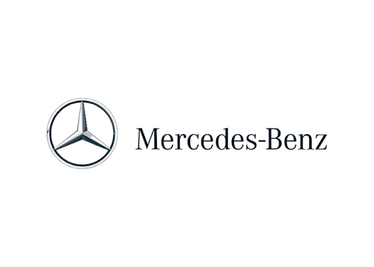

Nossa História
Conectando os melhores talentos do SENAI às gigantes da indústria.
O que é a CareerUp?
A CareerUp nasceu com um propósito claro: ser a ponte definitiva entre o ensino técnico de excelência e o mercado de trabalho. Nós organizamos grandes desafios e Olimpíadas Tecnológicas em parceria com o SENAI, criando o ambiente perfeito para que os alunos coloquem seus conhecimentos à prova resolvendo problemas reais do setor industrial.
Nosso modelo de atuação aproxima estudantes de grandes empresas multinacionais que estão em busca de inovação e novos talentos. A cada edição, firmamos parcerias com gigantes de diferentes setores para transformar o futuro dos jovens profissionais.

Edição Atual: Parceria com a Mercedes
Neste ano, temos o orgulho de anunciar a Mercedes-Benz como patrocinadora oficial das nossas Olimpíadas de Automação, Desenvolvimento e Mecatrônica.
Entendemos que o foco no aprendizado é o mais importante. Por isso, as equipes vencedoras de cada modalidade receberão uma premiação inédita: uma vaga de estágio 100% focada nos estudos. Os campeões serão contratados pela Mercedes e receberão a bolsa de estágio exclusivamente para continuarem estudando e se formando no SENAI, sem a obrigatoriedade de trabalhar presencialmente na fábrica durante esse período. É o investimento da indústria direto no seu aprendizado!